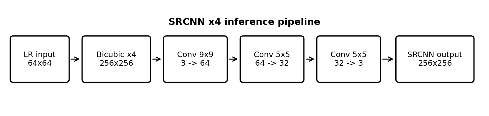
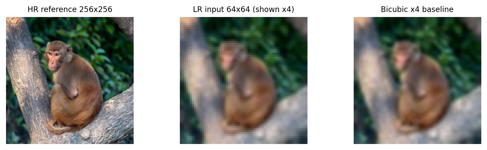
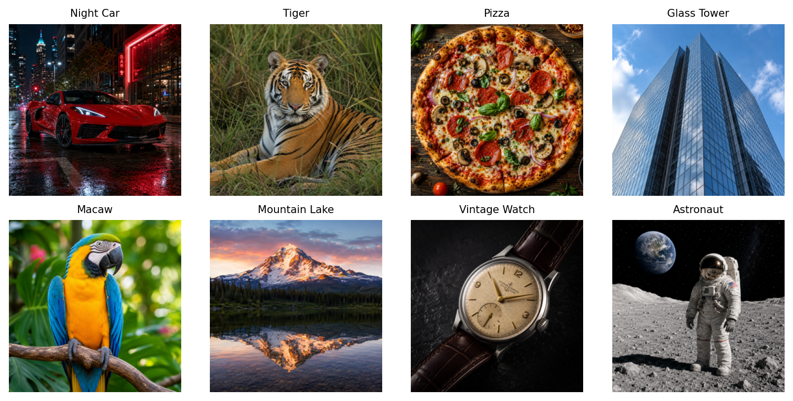
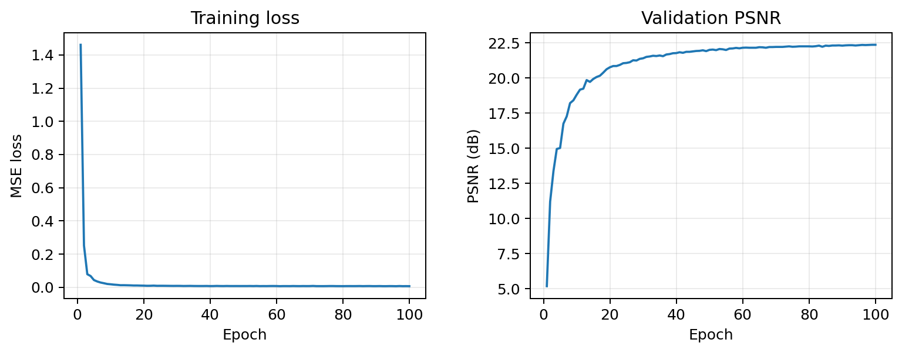
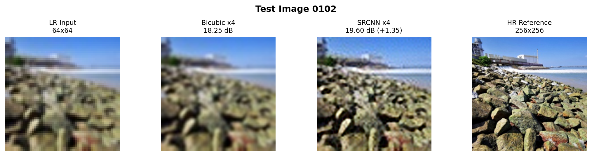
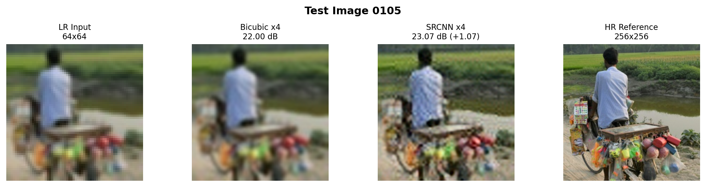
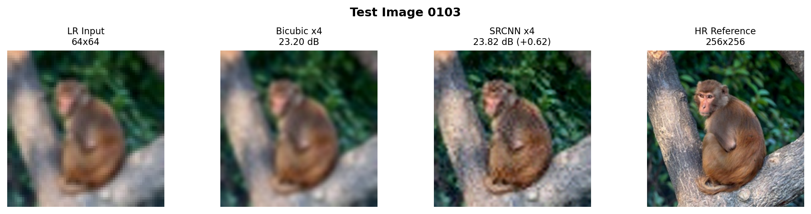
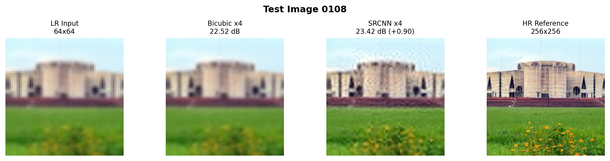
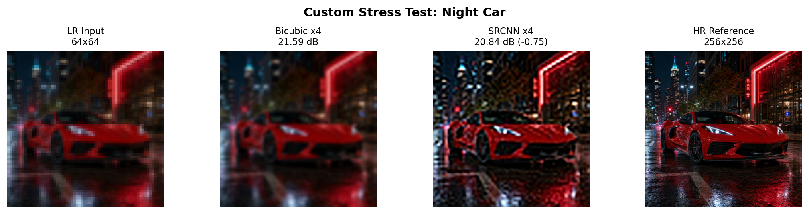
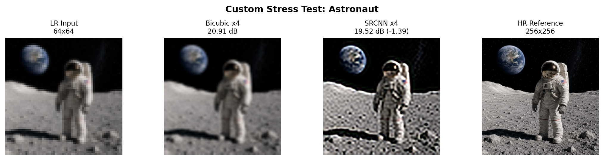

This project studies single-image super-resolution using a compact Super-Resolution Convolutional Neural Network (SRCNN). The task is to reconstruct a 256x256 image from a 64x64 low-resolution input at an upscale factor of four. The system first performs bicubic interpolation and then applies a three-layer convolutional network that learns a residual refinement of local edges, textures, and color transitions. The standardized dataset contains 110 HR-LR image pairs divided into 90 training, 10 validation, and 10 test images. Training uses random aligned patches, geometric augmentation, Mean Squared Error loss, Adam optimization, StepLR scheduling, and mixed precision when a CUDA GPU is available. The recorded 100-epoch training run reached a best validation PSNR of 22.36 dB. Evaluation with the packaged checkpoint produced an average PSNR of 24.07 dB on the ten project test images compared with 23.05 dB for bicubic interpolation, an average gain of about 1.02 dB. A separate, visually different custom image set was also prepared to examine generalization beyond the original data. Results show that SRCNN can improve repeated edges and natural texture, but performance becomes less reliable on strongly out-of-distribution content.
Keywords: Image Super-Resolution, SRCNN, Convolutional Neural Network, PSNR, PyTorch, Image Restoration.
Images are often enlarged after being captured at a low resolution. Common examples include cropped mobile photographs, compressed web images, surveillance frames, old digital archives, and visual material used in education. A conventional resize operation increases width and height, but it does not truly restore the fine information that disappeared during downsampling.
Single-image super-resolution (SISR) attempts to estimate a higher-resolution image from one low-resolution input. Unlike fixed interpolation, a neural network can learn how edges, textures, and local structures usually appear by observing paired LR and HR examples. This makes SISR a suitable problem for demonstrating supervised learning, convolutional feature extraction, optimization, validation, and quantitative model evaluation within one project.
The main objective is to implement a reproducible x4 super-resolution pipeline and compare the learned reconstruction against bicubic interpolation. The project also aims to understand where the model works well, where it fails, and why a numerical metric such as PSNR should be interpreted together with visual evidence.
The project contributes a complete student-scale workflow rather than only a model definition. The main contributions are:
Bicubic interpolation is a standard image-resizing baseline. It estimates new pixels from nearby values using a fixed interpolation rule. The method is computationally inexpensive and stable, but it cannot learn the statistical relationship between degraded and high-resolution images.
Dong et al. introduced SRCNN as one of the earliest successful CNN approaches for SISR [1]. The original idea is simple: upscale the LR input first, then learn a sequence of convolutional mappings that refine the enlarged image. Even with a shallow network, the method demonstrated that learned filters could improve reconstruction compared with classical interpolation.
Later methods such as FSRCNN, ESPCN, EDSR, and GAN-based super-resolution improve speed or perceptual quality, but they also increase implementation and training complexity. For this course project, SRCNN is useful because every stage can be inspected directly: bicubic pre-upscaling, convolutional feature extraction, nonlinear mapping, reconstruction, loss calculation, backpropagation, and validation.
The project uses a relatively small training collection, so a compact network is appropriate. SRCNN is also easy to explain from the GitHub code because its architecture contains only three convolutional layers. This reduces the risk that model complexity hides the core machine-learning concepts being demonstrated.
Each training example consists of a low-resolution image and its corresponding high-resolution target. Let x denote the LR input after bicubic enlargement and y the HR reference. The CNN learns parameters θ so that the reconstructed image fθ(x) becomes as close as possible to y.
This is a supervised regression problem because the output is a continuous RGB image rather than a class label. During training, the loss measures reconstruction error. Backpropagation then computes gradients for all trainable convolution kernels.
Convolutional layers are suitable for images because the same learned filter is applied across different spatial positions. Early filters can respond to edges and color changes, while deeper filters combine those responses into more useful local patterns. In SRCNN, the first 9x9 layer provides a relatively wide receptive field for feature extraction. The second 5x5 layer maps those features, and the final 5x5 layer reconstructs three RGB channels.
The implemented training notebook uses Mean Squared Error (MSE). For N output pixels, the loss is:
MSE gives a larger penalty to larger pixel errors and is directly related to PSNR, the main metric used for evaluation.
For images normalized to the [0,1] range, PSNR is calculated from MSE as:
A higher PSNR generally indicates that the reconstructed image is closer to the HR reference at pixel level. However, PSNR does not fully describe perceived sharpness. A visually plausible edge can still reduce PSNR if it is shifted from the exact reference location.
The LR input is only 64x64 pixels, while SRCNN expects an image at the target spatial size. Bicubic interpolation therefore enlarges the LR image to 256x256 before the CNN. The bicubic result is also kept as the non-learning baseline. This produces a fair comparison: both methods begin from the same LR information, but only SRCNN applies learned filters after the resize.

| Layer | Input | Output | Kernel |
|---|---|---|---|
| Conv1 + ReLU | 3 ch | 64 ch | 9x9 |
| Conv2 + ReLU | 64 ch | 32 ch | 5x5 |
| Conv3 | 32 ch | 3 ch | 5x5 |
The model has 69,251 trainable parameters. Padding keeps the spatial dimensions unchanged, so a 256x256 bicubic input produces a 256x256 SRCNN output. Unlike sub-pixel networks, SRCNN performs all learned convolution in the already enlarged image space.
At inference time, an LR image is converted to RGB, bicubic-upscaled by four, converted to a tensor, and passed through the trained CNN. The output is clamped to the valid [0,1] pixel range before being converted back into an image. The same HR reference is used to compute PSNR for both bicubic and SRCNN outputs.

The project data is organized into paired HR and LR folders. HR images are standardized to 256x256 pixels. Their corresponding LR inputs are 64x64, creating an exact x4 scale relationship. This makes the training target unambiguous and ensures that every LR crop can be matched to the correct HR region.
The standardized collection contains 110 image pairs. Image IDs 0000-0089 are used for training, 0090-0099 for validation, and 0100-0109 for final testing. The split is fixed instead of randomizing on each run, so the same images remain in the same role throughout the experiment.
| Split | IDs | Count | Purpose |
|---|---|---|---|
| Train | 0000-0089 | 90 | Parameter updates |
| Validation | 0090-0099 | 10 | Model selection |
| Test | 0100-0109 | 10 | Final evaluation |
Instead of using the same full image during every update, the training dataset selects a random 32x32 patch from the LR image and the aligned 128x128 region from the HR target. A new crop can be selected the next time the image is sampled. Horizontal flips, vertical flips, and random rotations by 0, 90, 180, or 270 degrees further vary the input without changing the LR-HR alignment.
This strategy is important for a small dataset. The model repeatedly sees different spatial regions and orientations rather than memorizing one fixed crop. It also reduces memory use because each optimization step works on smaller patches.
A second image set was prepared only for evaluation. It includes a night-time car scene, tiger, pizza, glass tower, macaw, mountain lake, wristwatch, and astronaut scene. These images were standardized to 256x256 and degraded to 64x64 using bicubic downsampling followed by a light Gaussian blur. They were not included in training or validation.
For each training batch, the LR patch is first bicubic-upscaled by four. The enlarged input is passed through SRCNN, and MSE is calculated against the aligned HR patch. Adam updates the weights using the resulting gradients. A StepLR scheduler reduces the learning rate every 30 epochs by a factor of 0.5.
The final repository separates code, data, support utilities, results, and submission materials. The top-level main.py runs the custom evaluation set. The model definition, training script, preprocessing script, and evaluation script are stored under support/. The new custom images are kept under data/evaluation_set/, and their generated comparisons are saved under support/new_results/.
best_srcnn_x4.pth so that the filename matches the actual three-layer SRCNN architecture used by the code.| Parameter | Value |
|---|---|
| Upscale factor | x4 |
| Epochs | 100 |
| Batch size | 16 |
| Training patch | 32x32 LR / 128x128 HR |
| Loss | MSE |
| Optimizer | Adam |
| Initial LR | 1e-4 |
| Scheduler | StepLR (30 epochs, gamma 0.5) |
| Metric | PSNR |
| Framework | PyTorch |

The recorded 100-epoch training run shows a rapid reduction in error during the early epochs followed by slower refinement. Validation PSNR rises sharply at first and then approaches a plateau. The best recorded validation PSNR is approximately 22.36 dB near the end of training.
This shape is expected for a small CNN. Large improvements occur when the network first learns basic edge and color mappings. Later epochs mostly fine-tune the convolution kernels. The StepLR scheduler also lowers the learning rate during training so that updates become more conservative.
The training script enables PyTorch automatic mixed precision when CUDA is available. This reduces memory use and can accelerate GPU training. Gradient scaling is used so that small gradient values are less likely to underflow. The same script can still run on CPU, where mixed precision is disabled automatically.
Validation PSNR is calculated after each epoch. Whenever the score exceeds the previous best, the model state is saved. This means final testing uses the best validation checkpoint rather than simply the last epoch. The method helps reduce the chance of choosing a model based only on training loss.

Two forms of evaluation are used. First, the bicubic and SRCNN reconstructions are compared numerically against the same HR reference using PSNR. Second, four-panel comparison figures show the pixelated LR input, bicubic output, SRCNN output, and HR reference side by side.
The packaged checkpoint is evaluated on the full ten-image project test split. With the current repository files, bicubic interpolation obtains an average PSNR of 23.05 dB, while SRCNN obtains 24.07 dB. The average improvement is therefore approximately +1.02 dB.
| Method | Average Test PSNR |
|---|---|
| Bicubic x4 | 23.05 dB |
| SRCNN x4 | 24.07 dB |
| Average gain | +1.02 dB |
Because the test split is small, the result should be interpreted as evidence for this project dataset rather than as a general benchmark against modern super-resolution systems.
| ID | Bicubic | SRCNN | Gain | ID | Bicubic | SRCNN | Gain |
|---|---|---|---|---|---|---|---|
| 0100 | 24.09 | 24.22 | +0.13 | 0105 | 22.00 | 23.07 | +1.07 |
| 0101 | 26.39 | 27.09 | +0.70 | 0106 | 26.69 | 26.99 | +0.30 |
| 0102 | 18.25 | 19.60 | +1.35 | 0107 | 21.96 | 24.59 | +2.63 |
| 0103 | 23.20 | 23.82 | +0.62 | 0108 | 22.52 | 23.42 | +0.90 |
| 0104 | 21.69 | 22.40 | +0.71 | 0109 | 23.72 | 25.52 | +1.80 |
All ten test images improve over the bicubic baseline with the packaged checkpoint. The largest gain is observed on image 0107 (+2.63 dB), while the smallest gain is on 0100 (+0.13 dB). The variation supports the later content-specific analysis.


Fig. 5 is a difficult low-PSNR case because the shoreline contains many irregular rock boundaries and small texture changes. Bicubic interpolation smooths these regions uniformly. SRCNN cannot recreate every lost detail, but the learned filters improve the pixel-level match enough to provide one of the larger gains in the test set.
Fig. 6 demonstrates a more complex natural scene. The image contains a person, bicycle, small hanging objects, water, and vegetation. SRCNN provides a gain of about 1.07 dB, showing that the learned mapping is not limited to a single object category.
| Image | Bicubic | SRCNN | Gain |
|---|---|---|---|
| 0101 scarecrow | 26.39 | 27.09 | +0.70 |
| 0102 shoreline | 18.25 | 19.60 | +1.35 |
| 0103 monkey | 23.20 | 23.82 | +0.62 |
| 0104 city | 21.69 | 22.40 | +0.71 |
| 0105 vendor | 22.00 | 23.07 | +1.07 |
| 0108 parliament | 22.52 | 23.42 | +0.90 |
The improvements are moderate rather than extreme. This is consistent with the role of SRCNN as a shallow refinement model. The network starts from an already enlarged bicubic image and learns corrections, so gains are normally incremental rather than a complete recovery of missing high-frequency information.


The monkey image combines fur, bark, and foliage. These structures contain a mixture of smooth regions and irregular edges. The positive PSNR gain shows that the model can refine more than one type of local pattern within the same image.
The result also illustrates an important limitation: the final SRCNN output remains close to the bicubic baseline. A shallow CNN does not invent unlimited detail; it learns a conservative mapping that tends to improve local reconstruction while maintaining overall image structure.
The parliament example contains straight lines, repeated windows, grass, and flowers. Unlike natural texture, geometric content makes pixel alignment especially important. Even small shifts in a straight edge create PSNR error. The observed +0.90 dB improvement suggests that the learned filters can still provide useful corrections around repeated structural borders.
These results are more balanced than claiming that learned super-resolution always outperforms interpolation. The test set contains different scene types, and the amount of improvement varies according to image content.
PSNR measures pixel similarity, not semantic correctness. A result with slightly higher PSNR may still appear overly smooth, while a lower-PSNR result may look sharper. Therefore, the saved four-panel comparisons are part of the evaluation rather than decorative figures. They allow the reader to inspect exactly what changed between the two reconstruction methods.


The custom image set was intentionally chosen to look different from the images highlighted in the main project results. Unlike the fixed ten-image test split, these scenes are not representative of the model's original data distribution. The purpose is to examine how the trained network behaves when it receives unfamiliar structures.
The night-car and astronaut examples both produce lower PSNR than bicubic. This is a useful result rather than something to hide. It demonstrates that a small CNN trained on limited data can over-specialize to the kinds of local patterns it saw during training. More diverse data would be required for strong generalization.
The night scene contains bright reflections, wet pavement, dark shadows, and sharp artificial lighting. The astronaut scene contains repeated suit textures, tiny point-like stars, strong black-white contrast, and fine rocky detail. These characteristics are different from much of the student-scale image collection. As a result, the learned convolution filters may make changes that increase pixel-level error.
The correct conclusion is not that SRCNN is always superior or always inferior. On the packaged project test set, it improves average PSNR. On the custom stress-test images, performance is less reliable. This distinction makes the evaluation more realistic and supports the standard machine-learning principle that performance depends on how closely future inputs match the training distribution.
The repository is divided so that each member can contribute to a real part of the implementation. Eraj handles model integration, the main entry point, final assembly, and project documentation. Shamira handles the new image-set preparation and HR-LR standardization workflow. Salman handles PSNR evaluation, comparison generation, and result export. These parts connect through shared folders rather than existing as isolated demonstration files.
The final structure also follows the course requirement of keeping a main runnable file, README, requirements file, data folder, support folder, and others folder. The report and later presentation/video files are stored in others/.
Future improvements should focus first on data diversity. A larger dataset would reduce domain-shift problems and expose the model to more edges, textures, lighting conditions, and object categories. The evaluation can also be expanded with SSIM and perceptual metrics so that image quality is not judged by PSNR alone.
Architecturally, the project could compare SRCNN with FSRCNN or ESPCN for efficiency and with EDSR or GAN-based models for stronger perceptual detail. A lightweight user interface could allow a user to load an LR image, choose a model, and view Bicubic and neural outputs side by side.
This project implements a complete x4 single-image super-resolution pipeline using SRCNN. The 110 paired images are separated into training, validation, and test splits, while random patch extraction and augmentation provide variation during training. The model is trained with MSE, Adam, StepLR scheduling, and validation-based checkpoint selection.
Using the packaged checkpoint, SRCNN improves the average PSNR of the ten project test images from 23.05 dB for bicubic interpolation to 24.07 dB, an average gain of approximately 1.02 dB. Representative results show improvement on irregular texture, natural scenes, and structural edges. A separate custom image set shows weaker generalization on unfamiliar scenes, emphasizing that learned super-resolution depends strongly on training-data coverage.
Overall, the project demonstrates how supervised learning, convolutional neural networks, backpropagation, validation, baseline comparison, and error analysis can be combined into a practical image-restoration application.
The authors thank the CSE445 course instructor at North South University for project guidance. Python, PyTorch, Torchvision, NumPy, Pillow, Matplotlib, Jupyter, and GitHub were used in the implementation. OpenAI tools were used for writing support and for generating the separate custom stress-test image set used only for additional evaluation.
[1] C. Dong, C. C. Loy, K. He, and X. Tang, “Image Super-Resolution Using Deep Convolutional Networks,” IEEE Transactions on Pattern Analysis and Machine Intelligence, vol. 38, no. 2, pp. 295-307, 2016.
[2] C. Dong, C. C. Loy, and X. Tang, “Accelerating the Super-Resolution Convolutional Neural Network,” in European Conference on Computer Vision, 2016.
[3] W. Shi et al., “Real-Time Single Image and Video Super-Resolution Using an Efficient Sub-Pixel Convolutional Neural Network,” in Proc. CVPR, 2016.
[4] B. Lim, S. Son, H. Kim, S. Nah, and K. M. Lee, “Enhanced Deep Residual Networks for Single Image Super-Resolution,” in CVPR Workshops, 2017.
[5] Z. Wang, A. C. Bovik, H. R. Sheikh, and E. P. Simoncelli, “Image Quality Assessment: From Error Visibility to Structural Similarity,” IEEE Transactions on Image Processing, vol. 13, no. 4, pp. 600-612, 2004.
[6] D. P. Kingma and J. Ba, “Adam: A Method for Stochastic Optimization,” in International Conference on Learning Representations, 2015.
[7] A. Paszke et al., “PyTorch: An Imperative Style, High-Performance Deep Learning Library,” in Advances in Neural Information Processing Systems, vol. 32, 2019.
[8] OpenAI, “ChatGPT and image generation tools,” used for writing assistance and creation of evaluation-only custom images, accessed 2026.
All comparison figures in this report correspond to files included in the repository. The project-test PSNR values are calculated from the packaged SRCNN checkpoint and the fixed LR-HR pairs, while the custom stress-test results are generated from the separate evaluation-only image set. The preprocessing, model definition, training procedure, and evaluation code are all included under support/.